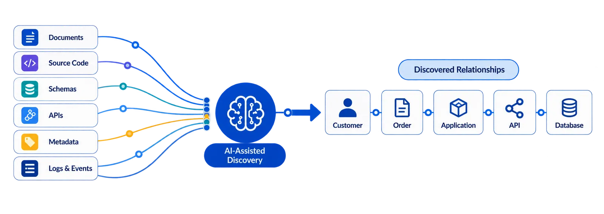
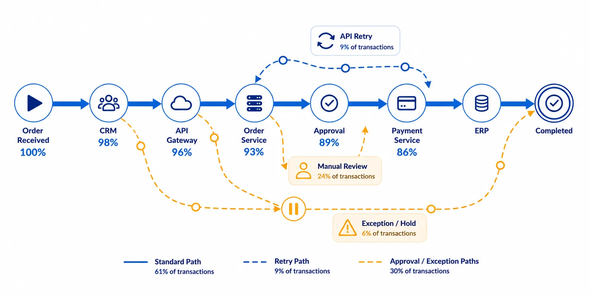

01
The Modeling Trap
The model describes how work is expected to happen.
Actual execution reveals the paths, retries, manual steps and exceptions that the model often misses.
The model describes how work is expected to happen.
Actual execution reveals the paths, retries, manual steps and exceptions that the model often misses.
Different teams see different parts of the same workflow.
Operations, engineering and architecture each have a valid view. The missing piece is the relationship between those views.
Static relationships explain what is connected.
Execution context adds what is happening now, what path was taken, what it depended on and where behavior changed.
Which platforms provide overlapping execution capabilities across business units?
Which systems and jobs are critical to an end-to-end business workflow?
Where is technology cost accumulating across specific execution paths?
Where do duplicate jobs, data movements, or shadow platforms exist?
Which jobs or runtime dependencies are slowing down the workflow?
Which technology is heavily used, lightly used, or easily avoidable?
What business execution could be disrupted by an upcoming technology change?
Where is there empirical evidence to retire, consolidate, or modernize platforms?
AI can rapidly explore documents, code, schemas, APIs, metadata and logs to identify and connect likely relationships across the enterprise.

Knowing what is connected does not show how work actually moves through those connections—or how often different paths, retries, approvals and exceptions occur.
RE-ViVE organizes transaction-level execution into paths, variants and observed patterns—connecting volume, timing, exceptions and outcomes to the systems and technology involved.

Together, AI-assisted discovery and observed execution can strengthen enterprise ontology and give technology leaders better context for analysis and decisions.
Institutional trade → settlement outcome
Trade Capture → Validation → Allocation → Exception / Repair → Settlement
Order Management → Trade Processing → Risk / Compliance → Settlement Platform → Custodian
APIs · message queues · batch jobs · databases · cloud / compute dependencies
Requested capability → production release
Requirement → Development → Build → Test → Approval → Deployment → Production
Work Management → Source Control → CI/CD → Test Platform → Change Management → Production
Build compute · pipeline runtime · deployment infrastructure · cloud resources · environment utilization
Order to cash performance → management reporting
Order Activity → Data Extraction → Transformation → Aggregation → Report Refresh → Consumption
SAP / CRM → Data Lake → Databricks / ETL → Snowflake → Power BI
Scheduled jobs · data movement · compute · storage · refresh frequency · runtime dependencies
The same approach can be applied to health insurance claims,supply chain execution, mortgage processing,commercial loan approval, customer onboarding, payments, service operations and other workflows where business outcomes depend on a connected chain of execution, systems and technology.